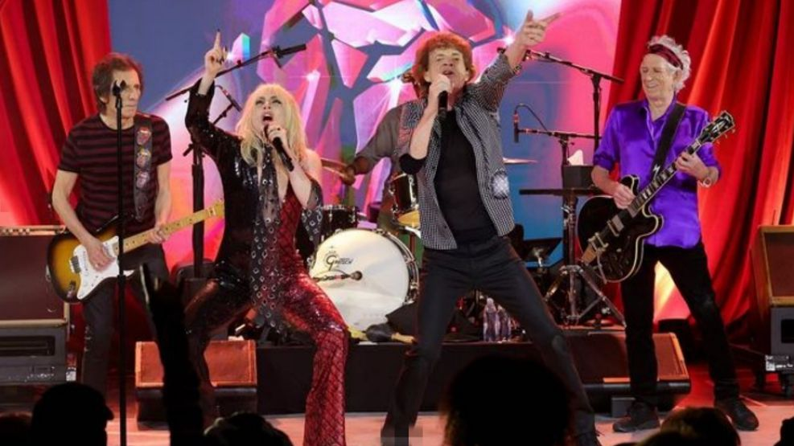

Lady Gaga colaboró con The Rolling Stones en la canción "Sweet Sounds of Heaven" del álbum Hackney Diamonds (2023).
La canción incluye a Stevie Wonder en el piano y fue interpretada en vivo por Gaga y la banda en un concierto sorpresa en el Racket NYC en octubre de 2023.

The Rolling Stones tocaron en la noche dl jueves por sorpresa en el club neoyorquino Racket NYC para celebrar el lanzamiento de su nuevo disco "Hackney Diamonds".
El primer álbum de material nuevo de la banda en dieciocho años, en una actuación a la que se unió Lady Gaga.
Link Sweet sounds of Heavevn
PROXIMOS SHOWS